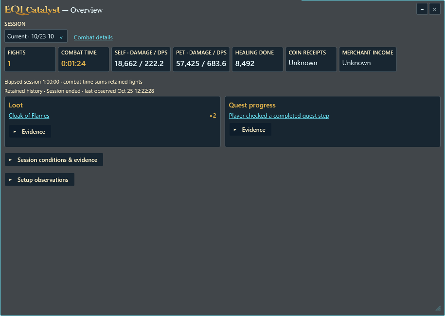
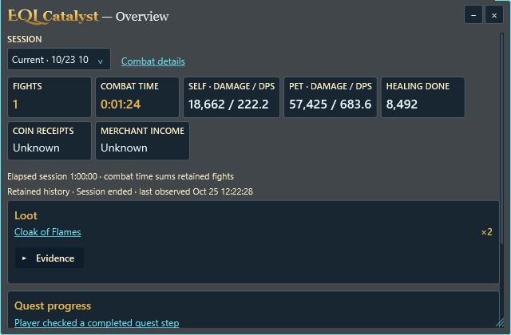
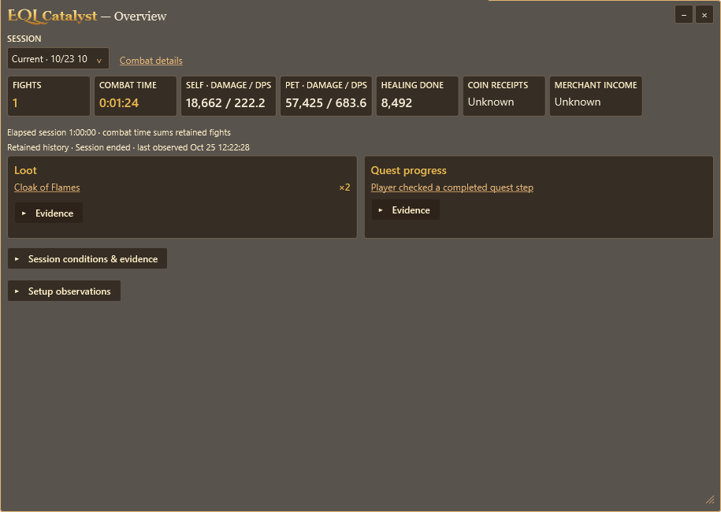
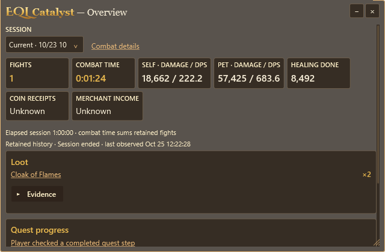
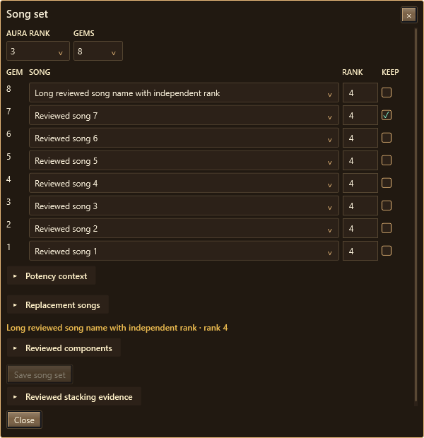
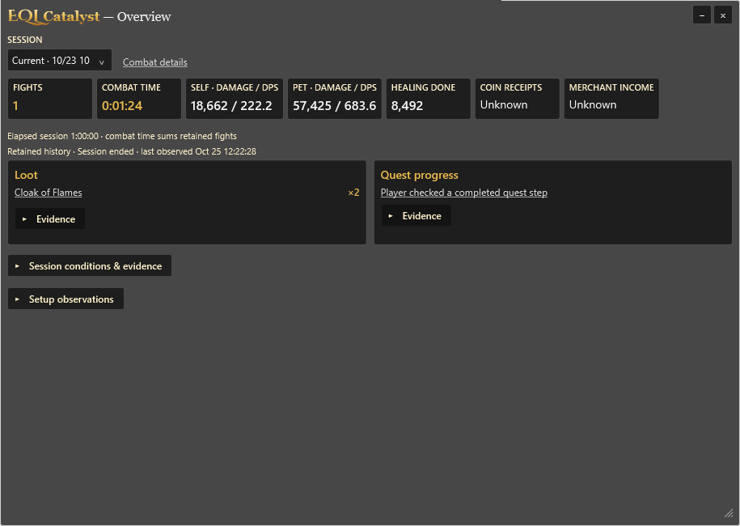
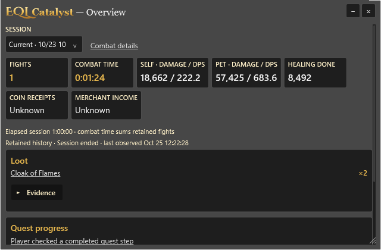
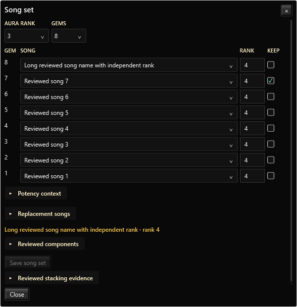

Actual Windows components with synthetic evidence. Overview keeps session summaries separate from Tracker management and Combat Lab analysis. Source validation retains all themes and 100/150/200/300% synthetic scales; these images show 100%. Physical monitor and live-game acceptance remain separate.







